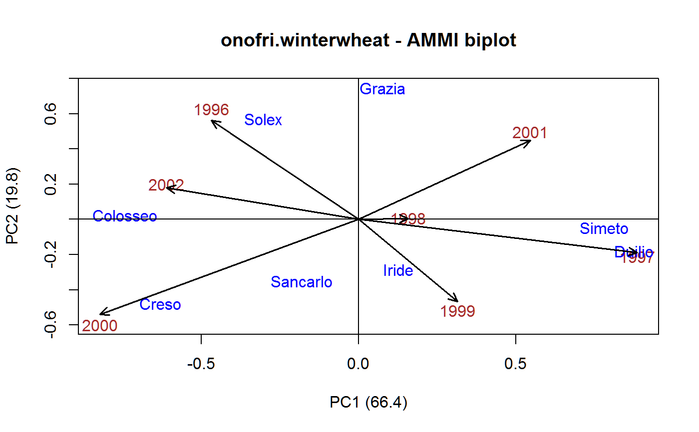

onofri.winterwheat.RdMulti-environment trial of winter wheat, 7 years, 8 gen
data("onofri.winterwheat")
A data frame with 168 observations on the following 5 variables.
yearyear, numeric
blockblock, 3 levels
plotplot, numeric
gengenotype, 7 levels
yieldyield for each plot
Yield of 8 durum winter wheat varieties across 7 years with 3 reps.
Andrea Onofri, Egidio Ciriciofolo (2007). Using R to Perform the AMMI Analysis on Agriculture Variety Trials. R News, Vol. 7, No. 1, pp. 14-19.
Downloaded electronic version from here Nov 2015: http://www.casaonofri.it/Biometry/index.html
Used with permission of Andrea Onofri.
F. Mendiburu. AMMI. http://tarwi.lamolina.edu.pe/~fmendiburu/AMMI.htm
A. Onofri. http://accounts.unipg.it/~onofri/RTutorial/CaseStudies/WinterWheat.htm
library(agridat) data(onofri.winterwheat) dat <- onofri.winterwheat dat <- transform(dat, year=factor(dat$year)) m1 <- aov(yield ~ year + block:year + gen + gen:year, dat) anova(m1) # Matches Onofri figure 1#> Analysis of Variance Table #> #> Response: yield #> Df Sum Sq Mean Sq F value Pr(>F) #> year 6 159.279 26.5466 178.3996 < 2.2e-16 *** #> gen 7 11.544 1.6491 11.0824 2.978e-10 *** #> year:block 14 3.922 0.2801 1.8826 0.03738 * #> year:gen 42 27.713 0.6598 4.4342 6.779e-10 *** #> Residuals 98 14.583 0.1488 #> --- #> Signif. codes: 0 '***' 0.001 '**' 0.01 '*' 0.05 '.' 0.1 ' ' 1title("onofri.winterwheat - AMMI biplot")